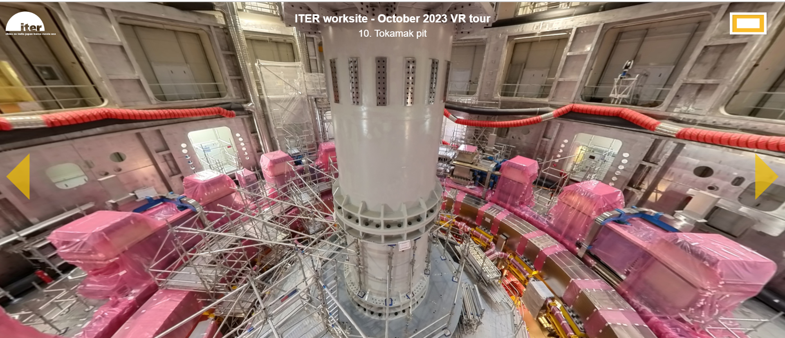
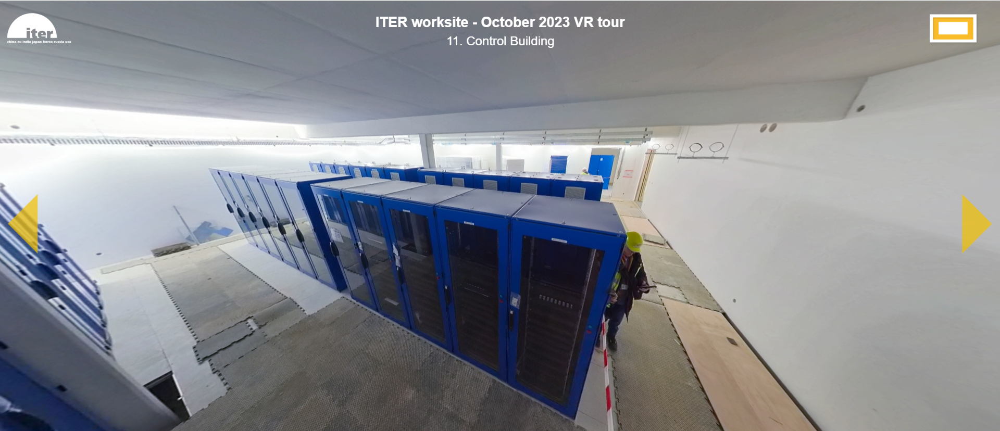
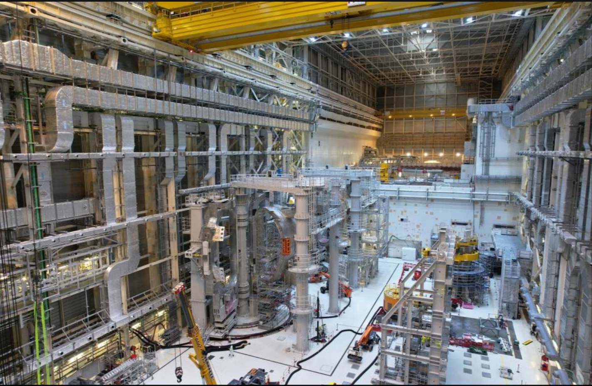

ITER (International Thermonuclear Experimental Reactor) is an international fusion reactor project that seeks to produce energy by controlling plasma with magnetic fields.

Their website explains how their how their reactor works and the benefits of fusion energy. ITER will not be a power plant that generates electricity, but it solves problems that other fusion reactors may encounter.

Addressing root cause
If one is convinced on using fusion reactors for future energy production, there is still the problem of not knowing what to do with this knowledge.
The most effective way the website addresses this issue is painting a picture of potential career paths they might want to pursue. With more people in the future working on the science, engineering, and construction of fusion reactors, there will be more people solving challenges in developing fusion reactors.
Uses of technology
ITER's website uses technology to show the outside and inside of the physical site.

There is a virtual tour and a photo album that showcases the inside and outside of the building. The virtual tour is a Google-Earth-styled view of the what goes on inside ITER, while the photo albums are collections of images across the years.

There are also aspects of civil engineering with the scaffolding, computer science with the data centers, and electrical and mechanical engineering with the large magnets in the reactor.

